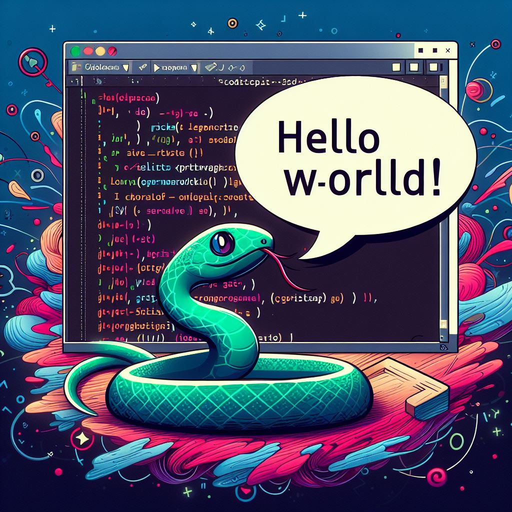

Capítulo 6: Strings (Em construção)#

Introdução a Strings#
As strings em Python são sequências de caracteres, o que significa que são compostas por letras, números, símbolos ou espaços. Essas estruturas de dados permitem uma variedade de manipulações para atender às necessidades do desenvolvedor. Neste contexto, abordaremos operações fundamentais, métodos e técnicas essenciais de manipulação de strings.
Operações com Strings#
Concatenação#
A concatenação de strings é uma operação que combina duas ou mais strings em uma única string. Isso é feito utilizando o operador +.
Exemplo:
string1 = "Olá, "
string2 = "mundo!"
concatenacao = string1 + string2
print(concatenacao)
Olá, mundo!
Repetição#
A repetição de strings envolve duplicar ou triplicar o conteúdo de uma string. Isso é alcançado pelo operador *.
Exemplo:
repeticao = "abc" * 3
print(repeticao)
abcabcabc
Indexação e Fatiamento (Slicing)#
As strings são indexadas, o que significa que cada caractere tem uma posição única. A indexação permite acessar caracteres específicos. Além disso, o fatiamento (slicing) possibilita extrair partes específicas da string.
Exemplo:
fruta = "banana"
primeira_letra = fruta[0]
substr = fruta[1:4]
print(primeira_letra)
print(substr)
b
ana
Métodos de Strings#
upper() e lower()#
Os métodos upper() e lower() alteram o caso da string para maiúsculas e minúsculas, respectivamente.
Exemplo:
fruta = "maçã"
maiuscula = fruta.upper()
print(maiuscula)
MAÇÃ
replace()#
O método replace() substitui parte da string por outra.
Exemplo:
mensagem = "Olá, mundo!"
nova_mensagem = mensagem.replace("mundo", "Python")
print(nova_mensagem)
Olá, Python!
split()#
O método split() divide uma string em uma lista de substrings com base em um delimitador.
Exemplo:
frase = "Python é uma linguagem poderosa"
palavras = frase.split(" ")
print(palavras)
['Python', 'é', 'uma', 'linguagem', 'poderosa']
Explorando mais Conceitos#
Formatação de Strings (f-strings)#
As f-strings são uma forma eficiente e legível de formatar strings com valores de variáveis.
Exemplo:
nome = "Alice"
idade = 25
mensagem = f"Olá, meu nome é {nome} e tenho {idade} anos."
print(mensagem)
Olá, meu nome é Alice e tenho 25 anos.
Métodos startswith() e endswith()#
Esses métodos verificam se uma string começa ou termina com uma determinada substring.
Exemplo:
frase = "Python é incrível!"
print(frase.startswith("Python"))
print(frase.endswith("incrível"))
True
False
Expressões Regulares em Python#
As expressões regulares, conhecidas como regex, são uma poderosa ferramenta para manipulação e busca em strings no Python, proporcionando flexibilidade e eficiência. O módulo re oferece suporte para trabalhar com expressões regulares.
Sintaxe Básica e Principais Funções#
Para começar, importamos o módulo re. A seguir, vamos analisar o exemplo para entender como as funções re.match e re.search funcionam:
Exemplo
import re
# Exemplo 1: Utilizando re.match para encontrar um padrão no início da string
padrao_match = r'\d+'
texto_match = "123 Python"
resultado_match = re.match(padrao_match, texto_match)
print(f"Exemplo 1 - Buscando padrão {padrao_match} no início do texto '{texto_match}':")
print("Resultado:", resultado_match.group() if resultado_match else "Sem correspondência")
print()
# Exemplo 2: Utilizando re.search para encontrar um padrão em qualquer lugar da string
padrao_search = r'\w+'
texto_search = "Python é uma linguagem poderosa"
string_busca = "linguagem"
resultado_search = re.search(padrao_search, texto_search)
print(f"Exemplo 2 - Buscando padrão {padrao_search} em qualquer lugar do texto '{texto_search}':")
print(f"Buscando a string '{string_busca}':")
print("Resultado:", resultado_search.group() if resultado_search else "Sem correspondência")
Exemplo 1 - Buscando padrão \d+ no início do texto '123 Python':
Resultado: 123
Exemplo 2 - Buscando padrão \w+ em qualquer lugar do texto 'Python é uma linguagem poderosa':
Buscando a string 'linguagem':
Resultado: linguagem
Explicação:
Exemplo 1 -
re.matchcom padrão\d+:O padrão
\d+busca por um ou mais dígitos no início da string.A string de texto é “123 Python”.
re.matchverifica se o padrão ocorre no início da string. Neste caso, o padrão é encontrado no início com os dígitos “123”.A saída será “Resultado: 123”, indicando que houve correspondência no início da string.
Exemplo 2 -
re.searchcom padrão\w+:O padrão
\w+busca por uma ou mais letras, dígitos ou underscores em qualquer lugar da string.A string de texto é “Python é uma linguagem poderosa”.
re.searchprocura por uma correspondência em qualquer lugar da string. Neste caso, o padrão é encontrado no início com a palavra “Python”.A saída será “Resultado: linguagem”, indicando que houve correspondência em qualquer lugar da string com a palavra “linguagem”.
Esses exemplos ilustram o uso das funções re.match e re.search para encontrar padrões específicos em strings.
re.findall(pattern, string) e re.finditer(pattern, string):#
re.findall: Encontra todas as correspondências e retorna como uma lista.re.finditer: Retorna um iterador que produz objetos de correspondência.
Exemplo:
import re
padrao = r'\w+'
texto = "Python é uma linguagem poderosa"
todas_correspondencias = re.findall(padrao, texto)
print("Todas as correspondências:", todas_correspondencias)
iterador_correspondencias = re.finditer(padrao, texto)
print("Iterador de correspondências:", [match.group() for match in iterador_correspondencias])
Todas as correspondências: ['Python', 'é', 'uma', 'linguagem', 'poderosa']
Iterador de correspondências: ['Python', 'é', 'uma', 'linguagem', 'poderosa']
re.sub(pattern, replacement, string):#
Substitui todas as ocorrências do padrão por uma string de substituição.
Exemplo:
import re
padrao = r'\d+'
texto = "Python 2 e Python 3"
substituido = re.sub(padrao, "X", texto)
print("Texto original:", texto)
print("Texto substituído:", substituido)
Texto original: Python 2 e Python 3
Texto substituído: Python X e Python X
As expressões regulares podem ser aplicadas em diversas tarefas de manipulação de strings, incluindo busca, extração e transformação de padrões específicos. Para uma compreensão mais profunda, consulte a documentação oficial sobre expressões regulares em Python: Expressões Regulares (re).
Exercícios#
Concatenação e Repetição: Escreva um programa que solicite ao usuário dois títulos de obras filosóficas de Arthur Schopenhauer e os concatene em uma única string. Em seguida, repita a string resultante três vezes e exiba o resultado.
Testes:
# Teste 1 Entrada: "O Mundo como Vontade e Representação", "A Arte de Escrever" Saída: "O Mundo como Vontade e RepresentaçãoA Arte de EscreverO Mundo como Vontade e RepresentaçãoA Arte de EscreverO Mundo como Vontade e RepresentaçãoA Arte de Escrever" # Teste 2 Entrada: "Parerga e Paralipomena", "Aforismos para a Sabedoria de Vida" Saída: "Parerga e ParalipomenaAforismos para a Sabedoria de VidaParerga e ParalipomenaAforismos para a Sabedoria de VidaParerga e ParalipomenaAforismos para a Sabedoria de Vida"
Indexação e Fatiamento: Crie uma função que receba o título de uma obra filosófica de Immanuel Kant como entrada e retorne a primeira e última letra do título, separadas por um hífen.
Testes:
# Teste 1 Entrada: "Crítica da Razão Pura" Saída: "C-a" # Teste 2 Entrada: "Fundamentação da Metafísica dos Costumes" Saída: "F-s"
Métodos
upper()elower(): Peça ao usuário para fornecer um trecho de uma obra de Platão. Converta todas as letras para maiúsculas e, em seguida, para minúsculas. Exiba ambas as versões.Testes:
# Teste 1 Entrada: "A República é uma obra fundamental de Platão." Saída: "A REPÚBLICA É UMA OBRA FUNDAMENTAL DE PLATÃO.", "a república é uma obra fundamental de platão." # Teste 2 Entrada: "O Mito da Caverna é uma alegoria impactante." Saída: "O MITO DA CAVERNA É UMA ALEGORIA IMPACTANTE.", "o mito da caverna é uma alegoria impactante."
Método
replace(): Crie um programa que substitua todas as ocorrências da palavra “ignorância” por “conhecimento” em uma passagem de um diálogo de Sócrates fornecido pelo usuário.Testes:
# Teste 1 Entrada: "A verdadeira sabedoria está em reconhecer a própria ignorância." Saída: "A verdadeira sabedoria está em reconhecer a própria conhecimento." # Teste 2 Entrada: "Só sei que nada sei." Saída: "Só sei que nada conhecimento."
Método
split(): Escreva um programa que solicite ao usuário uma citação de uma obra de Aristóteles e divida a citação em palavras. Em seguida, exiba a contagem de palavras e as próprias palavras em uma lista.Testes:
# Teste 1 Entrada: "A ética de Aristóteles destaca a busca pela virtude." Saída: "Número de palavras: 8", "['A', 'ética', 'de', 'Aristóteles', 'destaca', 'a', 'busca', 'pela', 'virtude.']" # Teste 2 Entrada: "A poética de Aristóteles influenciou a teoria literária." Saída: "Número de palavras: 8", "['A', 'poética', 'de', 'Aristóteles', 'influenciou', 'a', 'teoria', 'literária.']"
Formatação de Strings: Crie uma função que receba o título de uma obra, o ano de publicação e o tema de uma obra de René Descartes como parâmetros e retorne uma mensagem formatada usando f-strings.
Testes:
# Teste 1 Entrada: "Meditações Metafísicas", 1641, "Dúvida Metódica" Saída: "A obra 'Meditações Metafísicas', publicada em 1641, aborda o tema da Dúvida Metódica." # Teste 2 Entrada: "Discurso do Método", 1637, "Racionalismo" Saída: "A obra 'Discurso do Método', publicada em 1637, explora o tema do Racionalismo."
Métodos
startswith()eendswith(): Escreva uma função que receba uma lista de títulos de obras de Martin Heidegger e uma letra como parâmetros. A função deve retornar uma lista com os títulos que começam com a letra fornecida.Testes:
# Teste 1 Entrada: ["Ser e Tempo", "Contribuições à Filosofia (Do Evento)"], "S" Saída: "['Ser e Tempo']" # Teste 2 Entrada: ["O Conceito de Tempo em Aristóteles", "Heidegger e a Questão da Ética"], "H" Saída: "['Heidegger e a Questão da Ética']"
Expressões Regulares -
re.match: Crie uma função que utilizere.matchpara verificar se um título de obra de Jean-Jacques Rousseau atende aos seguintes critérios: deve começar com uma letra maiúscula, conter pelo menos um número e ter no mínimo 10 caracteres.Testes:
# Teste 1 Entrada: "Do Contrato Social" Saída: True # Teste 2 Entrada: "o estado de natureza" Saída: False
Expressões Regulares -
re.search: Implemente uma função que utilizere.searchpara encontrar todos os anos em que Baruch Spinoza escreveu obras e retorne uma lista com esses anos.Testes:
# Teste 1 Entrada: "Baruch Spinoza publicou 'Ética' em 1677 e 'Tratado Teológico-Político' em 1670." Saída: "['1677', '1670']" # Teste 2 Entrada: "As ideias de Baruch Spinoza influenciaram a filosofia moderna." Saída: "[]"
Expressões Regulares -
re.sub: Escreva uma função que usere.subpara substituir todas as ocorrências de palavras que terminam com “idade” por “eterno retorno” em uma passagem de uma obra de Nietzsche.
Testes:
# Teste 1
entrada: "A liberdade é a base do Eterno Retorno."
Saída: "A liberdade é a base do eterno retorno."
# Teste 2
Entrada: "A igualdade e fraternidade são valores do Eterno Retorno."
Saída: "A igualdade e fraternidade são valores do Eterno Retorno."